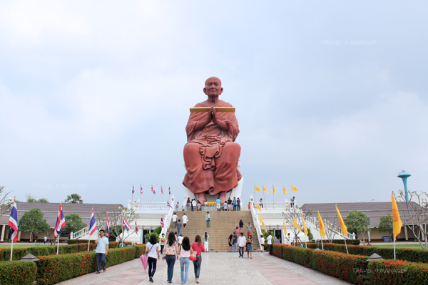
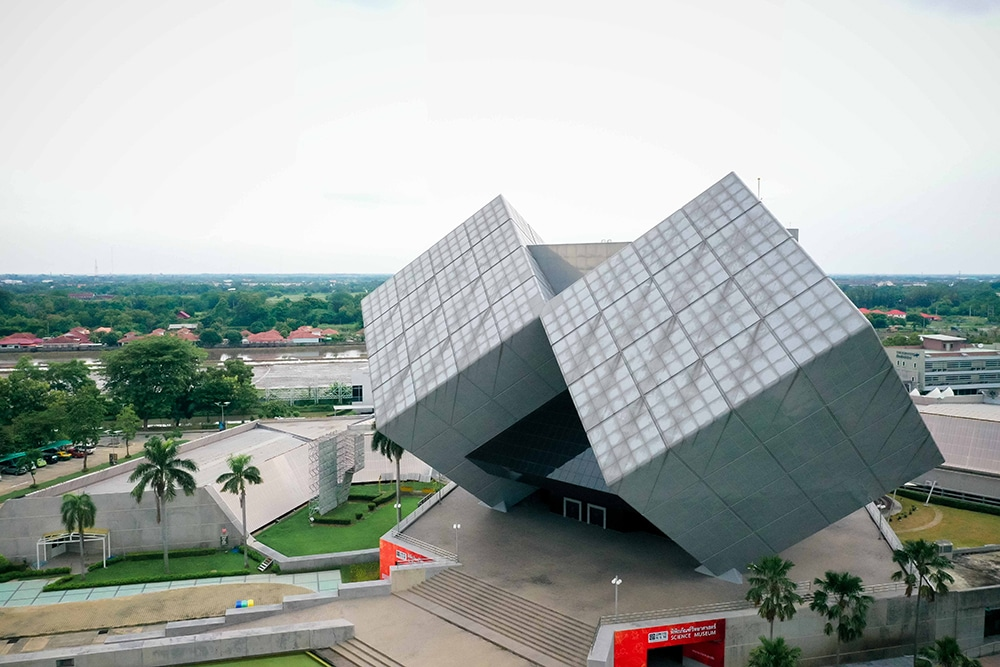
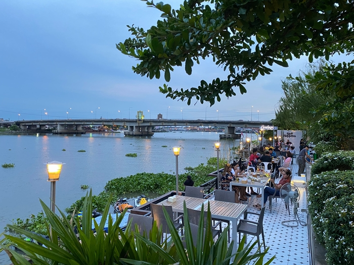

สวนสนุกขนาดใหญ่ มีเครื่องเล่นหลายโซน เช่น โซนผจญภัย โซนเด็ก และโซนเครื่องเล่นหวาดเสียว มีโชว์และร้านอาหารภายในสวน เหมาะสำหรับครอบครัวและผู้ชอบความสนุกสนาน
ที่อยู่: 62/99 หมู่ 1 ต.ปากคลองรังสิต อ.ธัญบุรี จ.ปทุมธานี

วัดเก่าแก่ มีพระพุทธรูปองค์ใหญ่ บรรยากาศร่มรื่น เหมาะสำหรับการไหว้พระและถ่ายรูป มีร้านค้าและอาหารไทยใกล้ ๆ
ที่อยู่: ต.บ้านกลาง อ.เมือง จ.ปทุมธานี

แหล่งเรียนรู้สำหรับเด็กและผู้ใหญ่ จัดแสดงด้านวิทยาศาสตร์ เทคโนโลยี และนวัตกรรม มีโซนทดลองแบบอินเทอร์แอคทีฟ
ที่อยู่: ต.ประชาธิปัตย์ อ.ธัญบุรี จ.ปทุมธานี

วัดเก่าแก่และโดดเด่นด้วยเจดีย์ที่สร้างจากเปลือกหอย มีความสวยงามและเป็นเอกลักษณ์ของวัดปทุมธานี ผู้เข้าชมสามารถไหว้พระ ทำบุญ และถ่ายรูปสวย ๆ รอบบริเวณวัด
ที่อยู่: ต.บางขะแยง อ.เมือง จ.ปทุมธานี

พื้นที่พักผ่อนและจุดชมวิวริมน้ำ สามารถเดินเล่นหรือปั่นจักรยานชมธรรมชาติ มีร้านอาหารและคาเฟ่บรรยากาศดี เหมาะสำหรับการพักผ่อนชิล ๆ
ที่อยู่: ต.บางพูน อ.เมือง จ.ปทุมธานี
